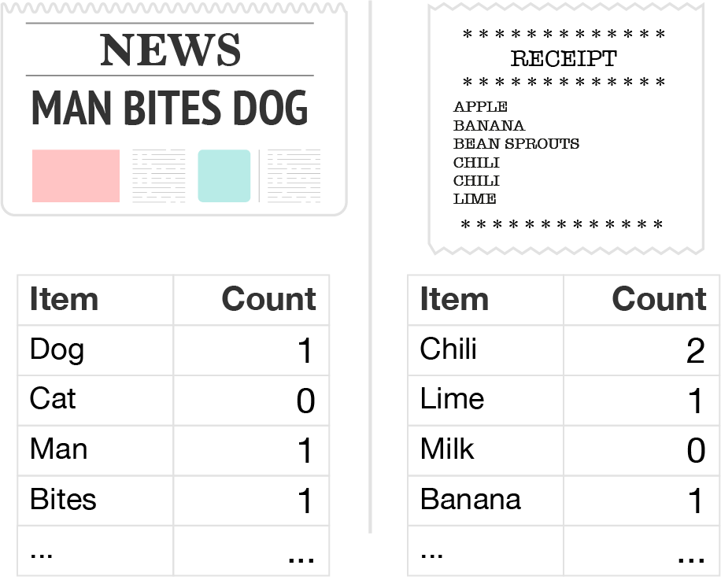
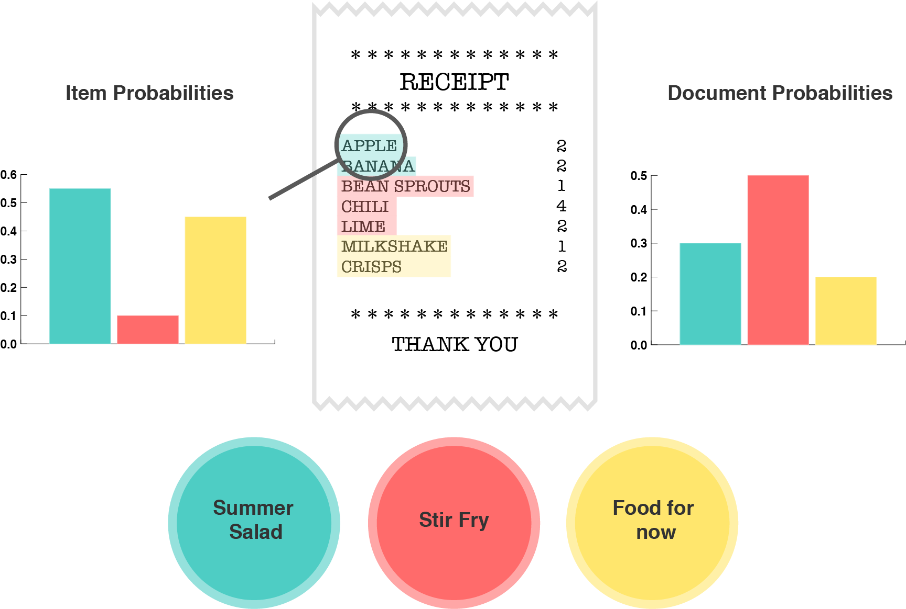
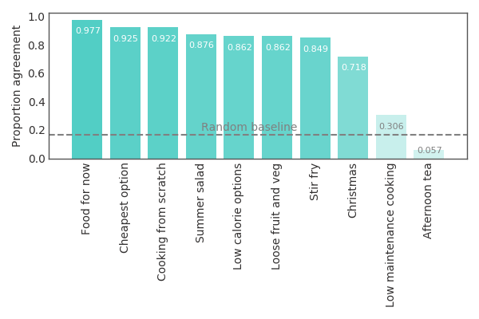

Conceptual Organization in the Supermarket
@adamnhornsby
What is a tomato?

It's a fruit, it's red, it's fleshy and juicy...
but is this how consumers think?
The answer helps us to optimize in-store and online search for customers
Tomatoes elude us because...

Objects gain meaning by their interactions with other objects (Wittgenstein, 1967, Jones & Love, 2007)
How do people mentally categorise products in the supermarket?
NLP researchers know about associations

"You shall know a word by the company it keeps" (Firth, 1957)
Topic models (e.g. LDA) use this premise to learn high-level categories from language data
So maybe these algorithms can help us to understand how consumers think about products
Imagine a basket instead of a sentence
It is straightforward to use existing NLP algorithms on basket data
Basket data requires less preprocessing and is unordered, which suits many NLP algorithms better
We built a topic model using basket data
The topics appeared coherent and grouped around specifc (e.g. Stir fry) and general (e.g. Cooking from scratch) themes
So did they make sense to consumers?
Consumers agreed with LDA's topics
An experiment with 1000 real consumers showed that they could identify "intruder" products accurately
Suggests that most topics were similar to mental categories held by consumers
Some were difficult (e.g. Afternoon tea), perhaps due to individual differences
Topics also predicted individual differences

The topics customers purchased predicted their self-reported age, location and gender
Suggests that people's mental categories for products may differ between individuals and groups
Consumers reason about products in terms of their roles with other products
Topic models can help us uncover the mental categories that consumers use
Differences in experience may lead to different mental categories
Supported by...